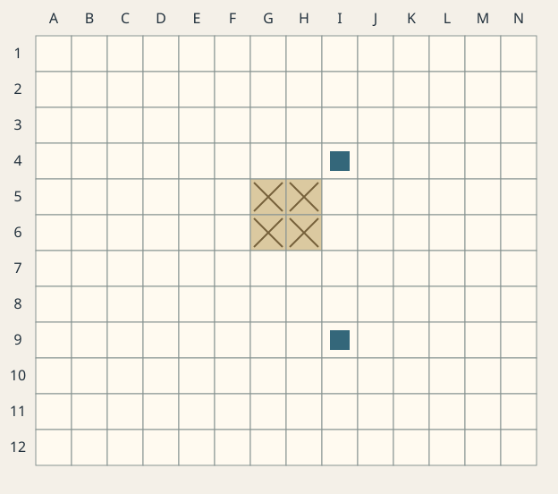

Одинаковые правила, разная история
Все карты совпадают с сеткой нативного пакета: 14 × 12, клетка — 5 футов. G5/H5/G6/H6 — трудная местность; I4/I9 — половинное укрытие. Остальные детали описания декоративны, пока ведущий не изменил поле штатно.
Расстановка и параметры
Герои в порядке списка встречи: B3, B4, B5, B6, C3, C4, C5, C6. Противники: L3, L4, L5, L6, M3, M4. Используйте только нужное число фигур.
Для 3 / 4 / 5 / 6 / 7 / 8 игроков: 2 / 3 / 3 / 4 / 5 / 6 противников, здоровье каждого 12 / 14 / 16 / 18 / 20 / 22. Защита 12; скорость 20 футов; одна ближняя атака +3, 1d4+1 дробящего урона, досягаемость 5 футов.
Перед запуском встречи герои должны находиться в её локации. После сыгранного перехода ведущий перемещает участвующих персонажей обычным действием приложения; герои в других местах автоматически в бой не попадают.
Враги — простая поддерживаемая модель. Мирные решения и ограничения сцены описаны отдельно; ведущий подтверждает их результат. После первого раунда напомните пути переговоров или отступления. Встречи не запускаются автоматически.
Репейные воришки и чужой канат
Только если герои замечают похитителей свободной связки, выбирают силовое преследование и DM подтверждает начало. Проход и основная улика доступны без боя.
Цель и выходы
Сохранить выбранное снаряжение или отбить одну связку, не гоняясь за всеми. Победа достигается возвращением связки либо свободным уходом группы; враги не обязаны быть побеждены до последнего HP.
Герои могут назвать владельца, предложить честную переноску за небольшую плату либо взять другую доступную связку. Воришки охотно обменивают найденное на полезную ненужную героям вещь; угрозы и классовая способность не обязательны.
Поведение противников
Небольшой ловкий искатель чужих вещей в плаще, усеянном сухими репьями; предпочитает хватать оставленное и убегать, а не причинять вред.
Держатся за валунами и мешают приблизиться к связке обычными перемещениями и ближними атаками. Не имеют автоматического воровства, особой реакции или магического побега. При явной потере выгоды отдают связку и отступают по свободному краю.
Размер группы
3 игрока: 2 противника по 12 HP; 4: 3 по 14 HP; 5: 3 по 16 HP; 6: 4 по 18 HP; 7: 5 по 20 HP; 8: 6 по 22 HP. У всех AC 12, одна ближняя атака +3, урон 1d4+1. Для больших столов разделите работу со связкой и прикрытие ухода, не добавляя особых сил.


Сетка 14×12. В центре прямоугольник рыхлого щебня, колонки F–I и ряды 5–8: трудная местность. Валун у D4 и валун у K9 дают укрытие. Связка у I6; вход героев с южного края, свободный выход на западе. Обрыва и автоматического падения нет.
Защита, которую никто не заказывал
Если после разговора о выдуманной плате одна из сторон явно переходит к силе и DM запускает необязательное столкновение. Открытый обход доступен до и во время боя.
Цель и выходы
Освободить прямой проход либо безопасно уйти всей группой на вересковую дугу. Достаточно отступления или сдачи плащей; Бурдаш не становится обязательным врагом или автоматическим союзным бойцом.
Проверить требование у Бурдаша, пройти нижней дугой, оспорить право брать плату или заплатить ради скорости. Показать, что великан не просил охраны, достаточно для предметного разговора без успешного обязательного броска.
Поведение противников
Наёмный любитель лёгкой платы с деревянной дубинкой и слишком торжественным выражением лица; за спиной нет никакого драконьего разрешения.
Пытаются удержать прямую дорожку обычными позициями и ближними атаками. Не перекрывают свободный обход магически. Если люди расходятся без платы либо лидер видит потерю преимущества, плащи предлагают закончить драку и убрать дощечку.
Размер группы
3 игрока: 2 противника по 12 HP; 4: 3 по 14 HP; 5: 3 по 16 HP; 6: 4 по 18 HP; 7: 5 по 20 HP; 8: 6 по 22 HP. AC 12, одна ближняя атака +3 с уроном 1d4+1. При 6–8 игроках оставьте широкие фланги для обхода и отдельную цель ухода, а не тесную линию обмена ударами.

Сетка 14×12. Центральный вереск F–I, ряды 5–8, является трудной местностью. Большой пень у C5 и камень у L7 дают укрытие. Прямая дорожка идёт с юга на север; свободная дуга проходит вдоль западного края. Пень Бурдаша расположен вне поля, великан не включается в инициативу автоматически.
Распорядители последнего поклона
Только если наёмные распорядители ещё не получили отмену, отказываются пропускать героев и после явного предупреждения начинается подтверждённое DM столкновение. При доставленной отмене боя нет.
Цель и выходы
Получить свободный подход к Седловине и возможность спокойно говорить с людьми. Распорядители сдаются, отступают или меняют работу после установления реальной ситуации; цель не состоит в их уничтожении.
Показать исправленное сообщение, дать услышать ответ ожидающих людей, позвать доступного Денвара или объяснить конкретную задачу переноски воды. Если отмена уже доставлена, распорядители сразу помогают по посильной просьбе и столкновение пропускается.
Поведение противников
Помощник Денвара с яркой лентой и обычным деревянным жезлом; считает, что охраняет зрительский проход, пока не узнает иные факты.
Стоят на широкой внешней площадке и используют только обычные движения и ближние атаки. Не толкают в пропасть специальной силой и не атакуют людей внутри кармана. При ясном ответе Денвара или подтверждённой просьбе о помощи прекращают мешать.
Размер группы
3 игрока: 2 противника по 12 HP; 4: 3 по 14 HP; 5: 3 по 16 HP; 6: 4 по 18 HP; 7: 5 по 20 HP; 8: 6 по 22 HP. AC 12, одна ближняя атака +3, урон 1d4+1. Для большого стола оставьте роли разговора, обхода и защиты говорящего; не увеличивайте опасность для ожидающих людей.

Сетка 14×12 изображает только широкую площадку. Центральные плоские камни F–I, ряды 5–8, дают трудную местность; выступы у C4 и L9 — укрытие. Подход к боковому разговорному просвету на востоке, путь отступления на юге. Внутренняя опасная щель и отвесные края находятся вне поля боя.